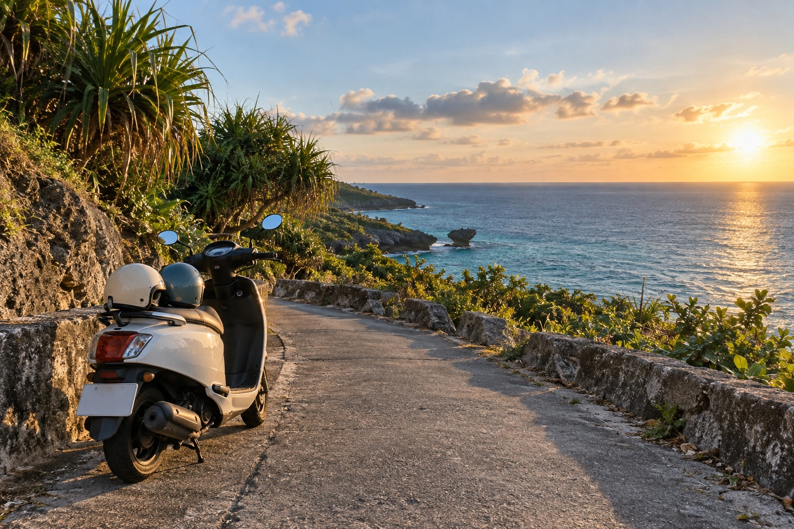

Two days · one breath · south of Taiwan
封面
- 06:45台南加滿油、準時出發
- 08:00高雄接人高雄集合
- 09:20東港碼頭停車、領票、出示證件
- 10:45登船建議班次，約 25 分鐘
- 14:00大福西 B 區第一潛 · 依教練現勘調整
02 / DAY ONE · 09.25 FRI
上島，讓身體
慢慢換成海的節奏。
日落 17:50 前後低潮 13:18第一潛 14:00
- 台南出發
早餐先在車上解決；防曬、證件、面鏡最後確認。
- 高雄接旅伴
08:00 抵達高雄集合，08:10 前重新上國道。
- 東港碼頭報到
預留停車、取票與排隊時間；船票採實名制。
- 搭船前往小琉球
容易暈船者提早用藥，船上以看遠方地平線為主。
- 高記在地小吃
先補碳水與水分，午餐不要吃到過飽。
- 教練會合・裝備檢查
確認配重、浮球、潛伴、出入水路線與撤退點。
- 大福西 B 區第一潛
建議 14:00–15:30；若雷雨或浪況改變，立即取消。
- 落日亭散步
把裝備晾好，再去看島的金色時刻。
- 穀泰 Good Thai 晚餐
熱門時段建議先訂位；潛水後不安排飲酒。
03 / DIVE DECISION
選點不看名氣，
只看當下的海。
預報快照：2026.09.24 · 實際仍以中央氣象署、雷達與教練現勘為準。
9/25 · 14:00第一潛
大福西 B 區
西北風時位於相對背風側，作為首選。低潮後段水位較淺，入水前要特別確認浪打礁石與回程路線。
- 風
- NW 4m/s
- 浪
- 0.1m
- 潮
- 13:18低潮
9/26 · 08:00第二潛
大福西 B 區
早上風較弱，08:00–10:00 是較理想窗口。10:00 後預報風速上升，準時收潛，不拖到中午。
- 風
- NNW 3m/s
- 浪
- 0.1m
- 潮
- 07:04滿潮
風向轉東／東南時備案
花瓶岩・美人洞 A 區
只在教練確認 A 區較平穩時切換。A、B 之外不自行開點，也不因「都到了」而勉強下水。
查看官方活動海域規則 ↗
GO / NO-GO看見閃電、聽見雷聲、找不到合格潛伴、風浪超過教練判斷──任何一項成立就不上水。
出發前再看一次海況 ↗
04 / DAY TWO · 09.26 SAT
趁風還沒醒，
再下去一次。
- 起床・補水
檢查耳壓、睡眠與身體狀態；不舒服就不上水。
- 洪媽媽早餐
外帶為主，清淡、七分飽，保留消化時間。
- 與教練會合
再看一次風、浪、流與天氣雷達。
- 大福西 B 區第二潛
08:00–10:00；滿潮後緩退，10:00 準時收潛。
- 清洗裝備・退房
面鏡、長蛙、相機逐項盤點，不濕裝上船。
- 大福羊肉海鮮
點餐先問當日供應，避開過辣過油。
- 還車・前往碼頭
留半小時彈性買伴手禮與取票。
- 搭船回東港
建議班次；仍以船公司當日公告為準。
- 高雄鄉村冬粉鴨
收尾晚餐，再送回接人地點。
- 返回台南
預估 18:30–19:00 抵達，依車流彈性調整。

把海留在身後，
把藍帶回日常。
05 / TABLE NOTES先吃得剛好，
才潛得自在。
才潛得自在。
MEALS / 2 DAYS
島上五餐，
跟著潛水節奏走。
營業時間與菜單可能臨時調整，出發前一天再以店家最新公告或電話確認。
06 / SAFE RETURN
安全上岸，
才是這趟最好的照片。
下水前 / 必做
- 01證照與教練
攜帶自由潛水能力證明；未受訓者不自行下潛。
- 02一上一下
全程潛伴制度，不單獨下潛，不做同時閉氣。
- 03浮球與潛水旗
確認繫繩、配重快卸與撤退點，遠離航道。
- 04海龜至少 5 公尺
不觸碰、不追逐、不擋路、不餵食，讓牠自行通過。
裝備 / 打包
07 / SPLIT THE TRIP
帳算清，
回憶只留藍色。
本趟總支出NT$0資料只保存在這台裝置
01
旅伴
先加入這趟一起分攤的人。
02
新增支出
每筆可指定付款人與實際分攤成員。
03
結算結果
系統會用較少筆數整理建議轉帳。
建議轉帳0 筆
支出明細0 筆